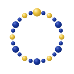

Flagship · AI
Senti AI
Finance intelligence that reads markets, flags risk before it compounds, and explains the reasoning in language a person can act on, not a black box that tells you what, but never why.
How Senti works →
Blockchains, artificial intelligence, data systems, and the specialist teams behind them. We design, build, and run all of it, so the pieces actually fit.
A blockchain team, an AI team, a data team, and an engineering team that ship as a single studio. When the chain, the model, and the interface are built by people who sit together, integration stops being a project of its own.
Chains, models, applications, and pipelines, designed and written in-house, not assembled from parts.
New systems wired into the ones governments and firms already depend on, without a rip-and-replace.
We run what we build, with the team who wrote it on call when it matters.
Finance intelligence that reads markets, flags risk before it compounds, and explains the reasoning in language a person can act on, not a black box that tells you what, but never why.
How Senti works →Our own settlement layer: the openness of a public chain, the speed and privacy a regulated institution needs.
Bespoke systems delivered end to end, from the data model to the screen an officer or a trader actually uses.
Pipelines that turn raw, messy, real-world data into decisions people trust enough to act on.
The foundation beneath the rest: infrastructure, applied research, and advisory for teams building hard things.
The ouroboros is the oldest symbol for a closed loop, the end feeding the beginning. It is also, exactly, what a full-stack company is: the infrastructure supports the product, the product proves the infrastructure, and the loop tightens with every cycle.
The mark is beadwork, twenty-four beads on one thread, an East African craft where the whole only holds because every small part is placed with intent. That is the standard we hold our engineering to.
Replacing paper and disconnected ledgers with platforms county and national offices can actually operate.
Risk intelligence, exposure monitoring, and settlement infrastructure for lenders, funds, and fintechs.
The cloud, pipelines, and research that let organisations build on solid ground instead of glue.
Whether it's a chain, a model, a platform, or all three, the conversation starts with the problem, not the pitch.